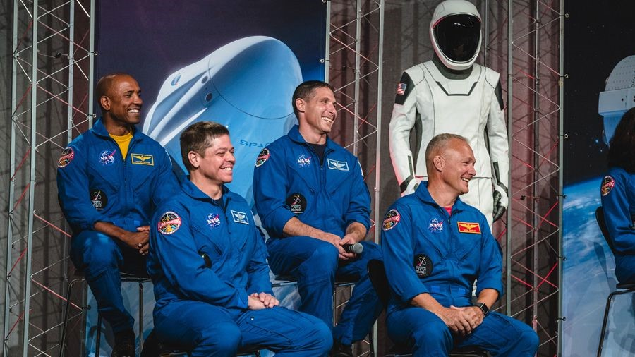
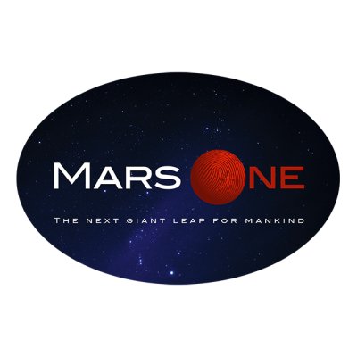
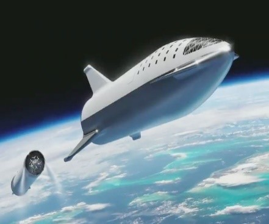
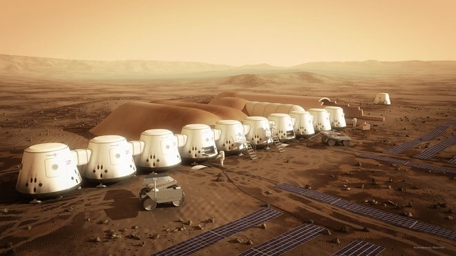

Voyage habité sur Mars
Jusqu’à aujourd’hui l’Homme s’était contenté d’envoyer des Robots sur Mars, avec des missions comme Curiosity récemment. Il s’avère que depuis quelques années, la réalisation d’un voyage habité sur Mars est de plus en plus envisagée par les agences spatiales et les gouvernements, puisque certaines missions ont vu le jour comme le projet Mars One. Ainsi se posent de nombreuses questions quant aux futurs acteurs de ces missions, et les enjeux de ces derniers.
Qui ?
Le projet plus avancé, c’est-à-dire le projet Mars One, associant projets spatiaux et téléréalité (permettant en partie de financer le projet), a été lancé en 2012 par les Néerlandais Bas Lansdorp et Arno Wielders, respectivement ingénieur et physicien. Les acteurs de ce voyage spatial seront des individus issus d’une sélection draconienne (aussi bien physiquement qu’intellectuellement) regroupant au départ plus de 200 000 candidats du monde entier pour former une équipe de 24 personnes qui participeront au voyage spatial vers la planète rouge. Actuellement, nous sommes à la 3ème phase de sélection, où il ne reste que 100 candidats, parmi eux, un médecin généraliste français s’appelant Jérémy Saget.
Cependant l’américain Elon Musk créateur de la société SpaceX, se montre également ambitieux, il prévoit d’envoyer deux équipages de deux personnes (Doug Hurley et Bob Behnken pour la 1ère mission et Mike Hopkins et Victor Glover pour la 2ème mission) d’abord dans l’ISS pour dans un second temps les préparer à un voyage vers la lune et Mars.
Quand ?
Le projet Mars One, ayant vu le jour en 2012 prévoyait de débarquer les astronautes sur le sol martien en 2022, cependant avec des problèmes de financement rencontrés ainsi qu’un manque d’avancées technologiques cette échéance a été repoussé 10 ans après la date initiale c’est-à-dire en 2032. Cependant Mars One souhaite tout de même tenir son objectif, c’est pour cela que la société a établi une feuille de route, montrant les différentes étapes de la réalisation de ce projet : 
- 2018-2020 Les 24 candidats choisis participent à un programme d’entrainement à temps plein, leur permettant d’être préparés pour la mission.
- 2022 Une mission test, non habitée sera réalisée. Elle consistera à envoyer un atterrisseur, qui comportera plusieurs instruments, comme une caméra visant à diffuser en continu des images de mars, un système d’extraction d’eau, différentes technologies des appareils photovoltaïques, ainsi que divers instruments proposés par des universités et centres de recherches.
- 2024 Lancement d’un satellite stationnaire assurant le relai, des communications continues entre Mars et la Terre.
- 2026 Envoi d’un rover chargé de trouver un secteur adapté à l’établissement des futurs camps de base des colons. Et lancement d’un second satellite de communication en orbite autour du soleil, il permettra de communiquer 24h/24 et 7jours/7 entre Mars et la Terre
- 2029 Mission cargo, matériels logistiques (équipements et du matériel) et un second rover (en coordination avec le premier) seront envoyés dans le futur site de camp de base choisi, pour préparer l’arrivée de la première mission habitée.
- 2031 Départ de la première équipe, constituée de 4 astronautes pour un voyage de 7 mois vers Mars.
- 2032 Arrivée de la première mission habitée et de l’équipement destiné à la seconde mission.
- 2034 Arrivée sur Mars de la seconde mission habitée et de l’équipement correspondant à la troisième mission.
Certaines agences spatiales et gouvernements veulent raccourcir l’échéance, c’est notamment le cas d’Elon Musk avec la société SpaceX, qui souhaite en 2022, envoyer un cargo, contenant de la logistique dans un premier temps sur Mars. Puis ensuite envoyer des hommes sur Mars en 2024, en utilisant des lanceurs BFR(Big Falcon Rocket) réutilisables.
Pourquoi aller sur Mars ?
La colonisation de Mars a de nombreux intérêts en particulier pour la communauté scientifique et les gouvernements, ainsi on retrouve plusieurs enjeux principaux dans cette conquête aussi onéreuse que dangereuse :
- Un défi technologique : parvenir à envoyer des hommes sur Mars serait une véritable prouesse technique. En la comparant ainsi au programme Apollo, cet exploit donnera un plus grand intérêt pour les sciences à la jeunesse et suscitera de nombreuses vocations d’ingénieurs et de scientifiques. Des innovations techniques verront le jour et finiront par profiter au plus grand nombre, comme des besoins de la NASA dans les années 60 qui ont accéléré considérablement l’avènement de l’informatique. Le GPS est un autre exemple célèbre de technologie permise par la conquête de l’espace.

- L’expansion de l’Homme : Créer de nouvelles colonies sur Mars permettra la naissance de nouvelles civilisations et sociétés, un nouveau monde avec de nouvelles opportunités. Cela permettra en même temps de repousser les limites de la conquête spatiale.
- La survie de l’Humanité : avec les problématiques mondiales actuelles aussi bien d’un point de vue géopolitique que scientifique, comme le réchauffement climatique, les tensions récurrentes entre les pays du globe et la surpopulation, l’urgence nous pousse à agir. Il se trouve que l’envoi de populations sur Mars est une alternative viable et durable à la résolution de ces problèmes.